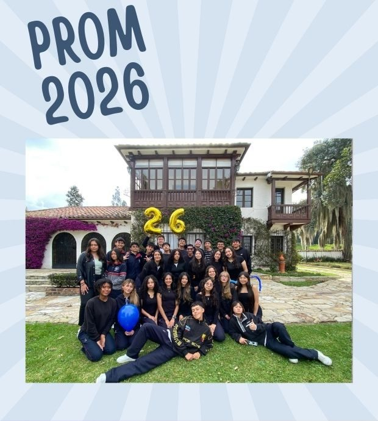

Compartimos misión y visión con los colegios de las Madres Escolapias en Colombia.
Misión
Formar a la persona completa en piedad y letras
Somos una escuela católica que educa a niños, niñas y jóvenes de forma integral. Ponemos a cada persona en el centro, en lo singular, lo social y lo trascendente, y caminamos con las familias para construir un mundo más justo, fraterno y feliz.
HumanizadoraEvangelizadoraInnovadoraTransformación social
Una escuela que humaniza y responde a un mundo global
Fieles a nuestro carisma, nos propusimos destacarnos por fortalecer:
Crecimiento personal y pastoralHabilidades emocionalesCiudadaníaLiderazgo y autonomíaToma de decisionesCuidado de la casa comúnInnovación e investigaciónHabilidades de pensamientoLengua extranjera
Las necesidades de cada familia con un servicio fiel a la identidad escolapia.
02
Fomentar
La prevención y el autocuidado de todo el equipo de trabajo.
03
Implementar
Formación continua para que el equipo crezca en lo personal y lo profesional.
04
Generar
Ambientes de aprendizaje que humanizan, evangelizan e innovan.
05
Ofrecer
Servicios de bienestar cálidos, seguros y oportunos.
06
Verificar
La mejora continua: medir resultados y gestionar riesgos.
Nuestra política de calidad, en pocas palabras
Ofrecemos formación integral en piedad y letras, con un proyecto de vida basado en principios cristianos y éticos y en las competencias del siglo XXI, para aportar a la transformación social y al cuidado del medio ambiente. Lo hacemos con un equipo comprometido y un sistema de gestión que cuida la salud de las personas, optimiza los recursos, controla los riesgos y mejora sus procesos.
Nuestros valores
Once valores que se notan
Están en nuestro PEI y se viven en el aula, en el descanso y en casa.
01
Amor a los niños
Respeto, inclusión y atención especial a quien más lo necesita.
02
Alegría
Entusiasmo y sentido de fiesta.
03
Sencillez y humildad
Trato cercano, cordial y personal.
04
Paciencia
Escuchar y respetar el ritmo de cada proceso.
05
Búsqueda de la verdad
Coherencia, sentido crítico y apertura.
06
Responsabilidad
Esfuerzo y dedicación por el trabajo bien hecho.
07
Preparación profesional
Innovar y seguir aprendiendo siempre.
08
Trabajo en equipo
Empatía, creatividad, diálogo y confianza en las personas.
09
Justicia
Equidad, solidaridad y compromiso.
10
Libertad
Autonomía, tolerancia y valor para arriesgarse.
11
Trascendencia
Interioridad, gratuidad y adhesión libre a Jesús.
Piedad y letras
Nuestro lema: fe y conocimiento que crecen juntos, desde Pre-jardín hasta Once.
Propuesta pedagógica montaliana
La persona en el centro
Calasanz abrió la escuela a los niños pobres; dos siglos y medio después, Paula Montal la abrió a las niñas. Seguimos su intuición con una escuela activa y humanista.
Singular
Acogemos a cada estudiante en su originalidad, potenciamos su manera de aprender y lo orientamos según sus intereses.
Social
Despertamos el juicio crítico, la corresponsabilidad y el cuidado del medio ambiente para aportar a la sociedad.
Trascendente
Acompañamos el crecimiento en la fe y la formación intelectual y ética de cada estudiante.
El estudiante
ProtagonistaConstruye su conocimientoCreativoReflexivoComprometido
El docente
CreadorInvestigadorOrientadorFlexibleImpulsa lo individual
La familia
Primera escuelaForma en libertadResponsabilidadVerdad y justicia
Escuela pía
Un lugar de encuentro con…
los otrosla fiesta y la alegríala cultura y el artelo académicoel juegola naturalezalo espirituallos derechos y deberesuno mismo
Inspirado en «Educar es transformar», de M. Mara Belem López, citado en nuestro PEI.
Perfil del egresado
¿Cómo sale un bachiller calasancio?
Humano
Vive valores como el respeto a la vida, la honestidad y la responsabilidad.
Lidera para transformar su entorno.
Académico
Piensa con método: observa, analiza y deduce.
Entiende la historia de su región, de su país y del mundo.
Profesional
Ayuda a resolver problemas de su comunidad.
Participa con creatividad en la ciencia y la tecnología, con criterio propio.
Reseña histórica
Más de 60 años en la vereda Yerbabuena
Empezamos con 40 estudiantes, una profesora y una religiosa. Esta es nuestra línea del tiempo, de Madre Paula a Chía.

Promoción 2026
¿Sabías que…?
El colegio está en tierras de la antigua hacienda Yerbabuena, donde creció el escritor José Manuel Marroquín, que luego fue presidente de Colombia. Otra parte de esa hacienda es hoy el Instituto Caro y Cuervo.
Tradición desde el inicio
Danzas folclóricas en encuentros escolares y municipales, y catequesis acompañada por las religiosas y las novicias.
1799Arenys de Mar
Nace Paula Montal
El 11 de octubre, en un pueblo de la costa de Cataluña, España.
1829Figueres
Su primera escuela para niñas
Abre una escuela para niñas cuando casi nadie las educaba, con la pedagogía de San José de Calasanz.
1847Sabadell
Nacen las Madres Escolapias
El 2 de febrero, Paula y sus primeras compañeras fundan las Hijas de María, Religiosas de las Escuelas Pías.